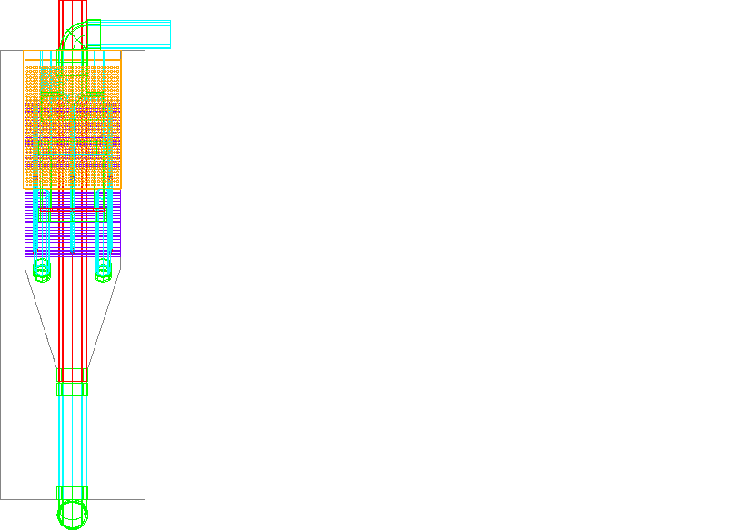
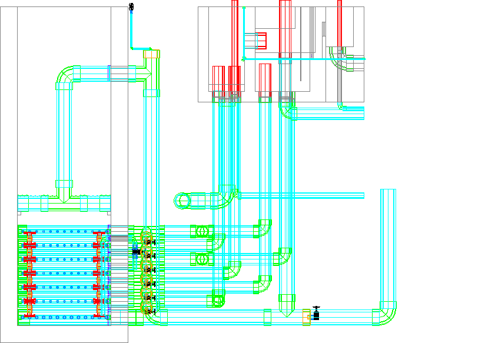
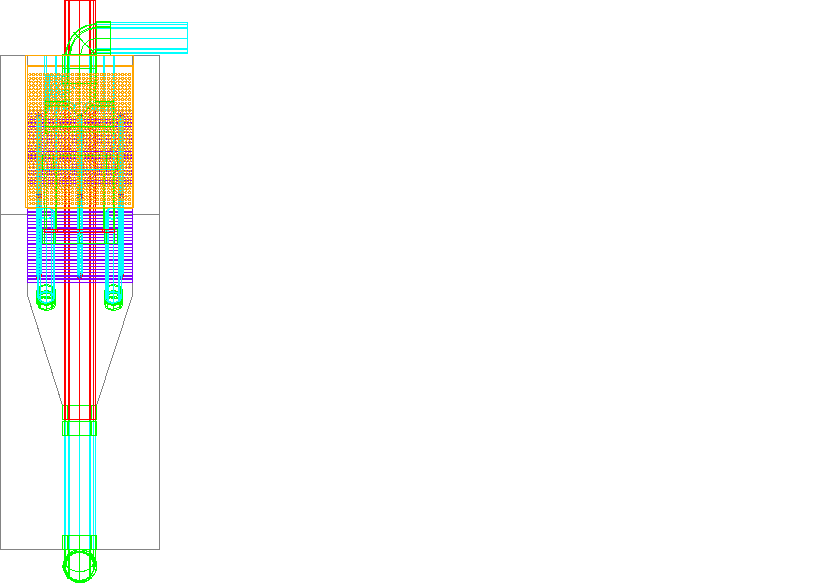
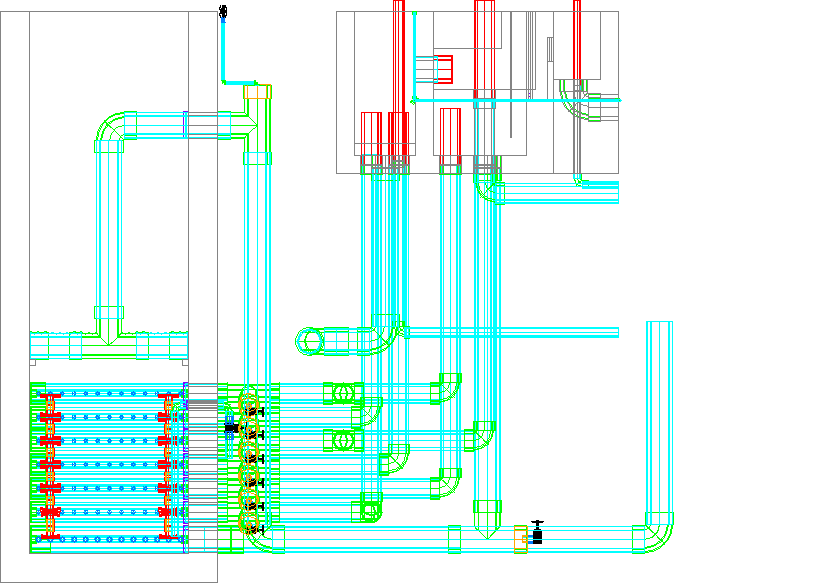

AguaClara is dedicated to designing affordable community-owned water treatment systems that may be implemented worldwide. We provide, free of charge, our web-based design tool and the accompanying information to qualified regional or national implementation partners who provide design/build/operate/train/transfer services. To ensure quality implementation we provide engineering support, design customization, performance monitoring, and certification. Prior to implementation of any AguaClara technologies, please contact AguaClara Design Experts to learn about our engineering support services. IN NO EVENT SHALL CCTEC, CORNELL UNIVERSITY, OR THEIR EMPLOYEES BE LIABLE TO ANY PARTY FOR DIRECT, INDIRECT, SPECIAL, INCIDENTAL, OR CONSEQUENTIAL DAMAGES, INCLUDING LOST PROFITS, ARISING OUT OF THE USE OF WORK AND ITS ASSOCIATED COPYRIGHTS, EVEN IF CCTEC OR CORNELL MAY HAVE BEEN ADVISED OF THE POSSIBILITY OF SUCH DAMAGE.

This work is licensed under a Creative Commons Attribution-ShareAlike 4.0 International License.The EtFlocSedFi design method was requested on 2/10/2018 8:13:09 PM. The version of Mathcad code used to generate this design was 7667.
The value of Q.Plant was 50.000 L/s.
The value of HL.FlocMax was 0.400 m.
The value of H.SedSlopesToFlocWeirMin was 0.250 m.
The value of T.FlocSlab was 0.150 m.
The value of T.SedWall was 0.150 m.
The value of T.SedDividingWall was 0.150 m.
The value of T.SedChannelWall was 0.150 m.
The value of T.FlocWall was 0.150 m.
The value of T.FlocDividingWall was 0.150 m.
The value of T.FiWall was 0.250 m.
The value of T.FiBoxWall was 0.150 m.
The value of T.PlantWall was 0.150 m.
The value of T.PlantFloor was 0.200 m.
The value of T.ChemSlab was 0.200 m.
The value of T.DrainChannelWall was 0.150 m.
The value of C.CoagDoseMax was 40.000 mg/L.
The value of C.ChlorDoseAve was 1.000 mg/L.
About.html
EtFlocSedFi English.docx
EtFlocSedFi English.pdf
EtFlocSedFi Spanish.docx
EtFlocSedFi Spanish.pdf
EtFlocSedFi.dwg
EtFlocSedFi.txt
 

Request new design
Browse available methods